1
621 6th Avenue, circa 1877
888 Broadway, circa 1881
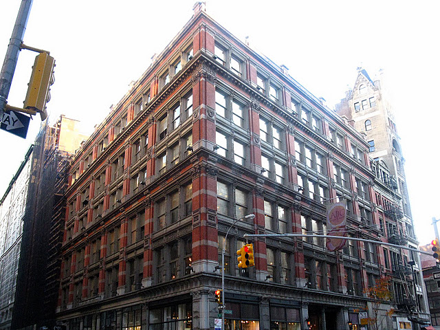
115 Fifth Avenue, circa 1876

Sixth Avenue near 23rd, circa 1879
couldn't find a photo
Fifth Avenue and 32nd, circa 1906
couldn't find a photo
103 Fifth Avenue (17th), circa 1895
 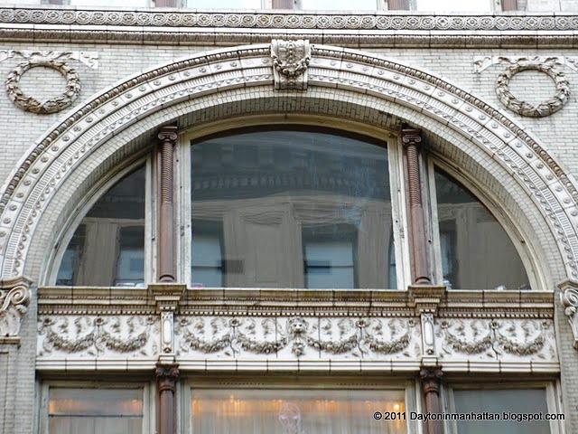
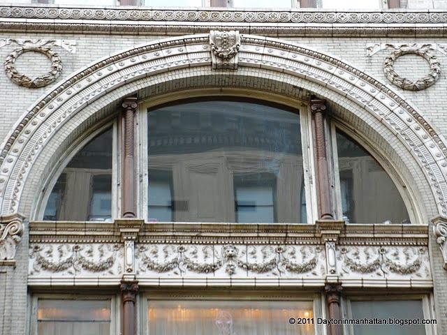
27 West 21st, circa 1908


666 Sixth Venue, circa 1896


 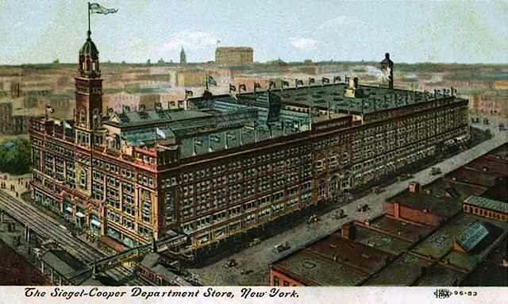
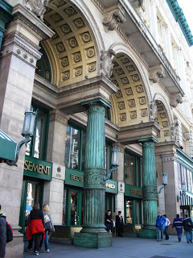
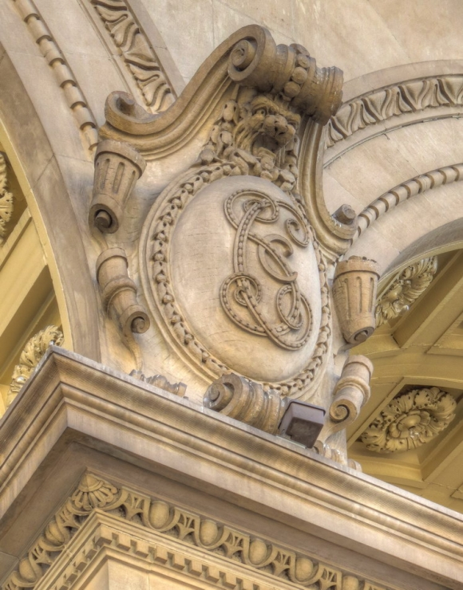
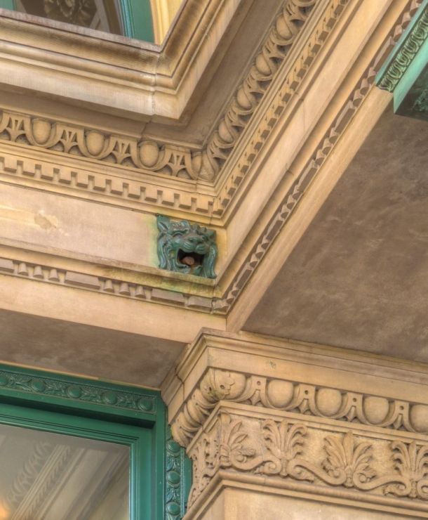
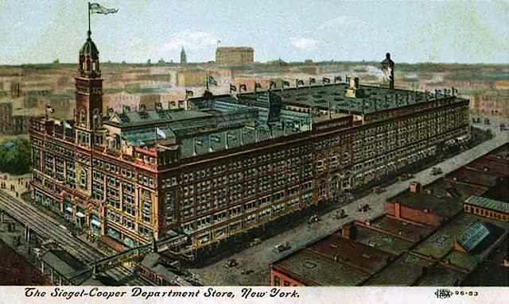
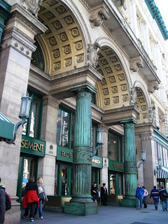
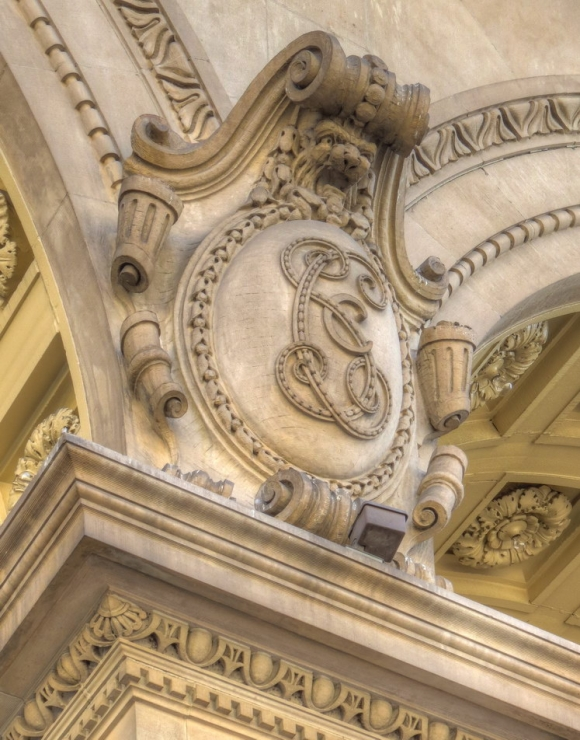
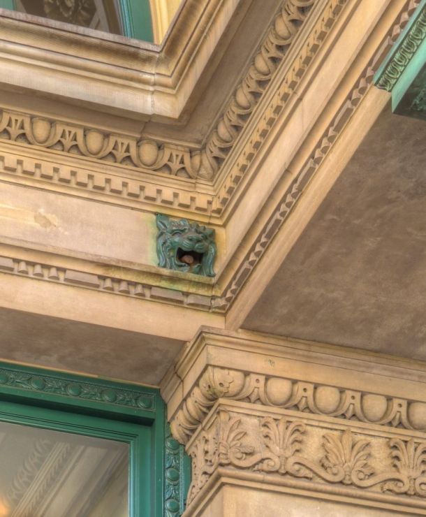
Sixth Avenue at 20th, circa 1887

155 Fifth, circa
bookstore

170 Fifth Avenue, circa 1897
pianos

West 23rd, circa 1878
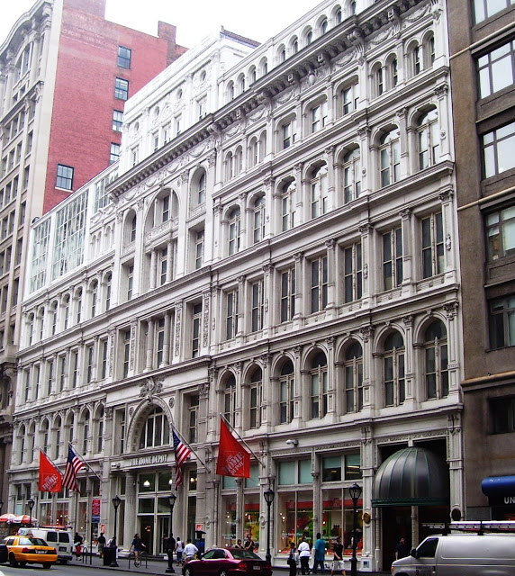
Broadway and 19th, circa 1870
 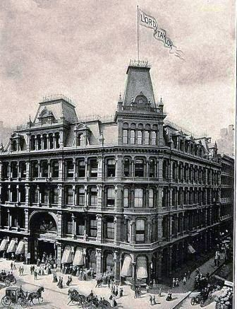
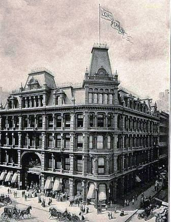
Sixth Avenue and 14th Street, circa 1858

Broadway and 10th, circa 1906
"the iron palace"
not really in the neighborhood, though

675 Sixth, circa 1899

Sixth Ave at 22th Street, circa 1889

???
???
20th St at Sixth Avenue, circa 1846
"english country parish"
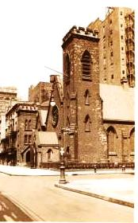
641 Sixth Ave, circa 1902
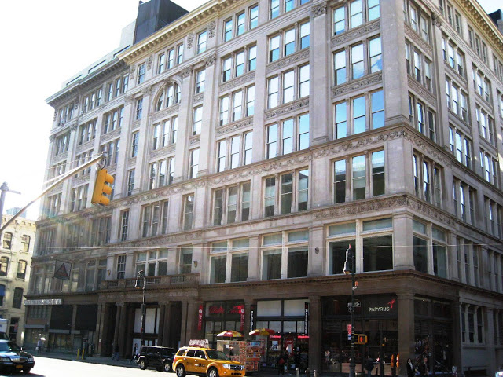

Broadway at 11th, circa 1869
not really in the neighborhood

111 E 15th, circa 1847

East 34th, circa 1907
not really in the neighborhood
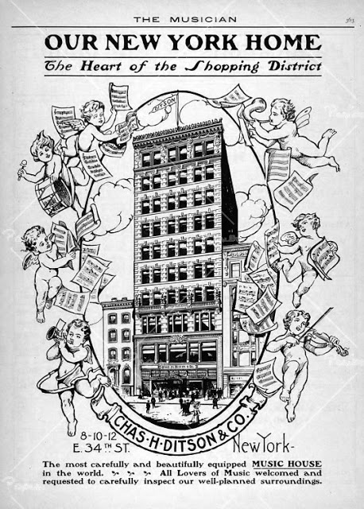
???
???
900 Broadway at 20th, circa 1886

Sixth Ave and 20th St, circa 1892
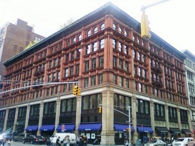

Broadway and 19th, circa 1884
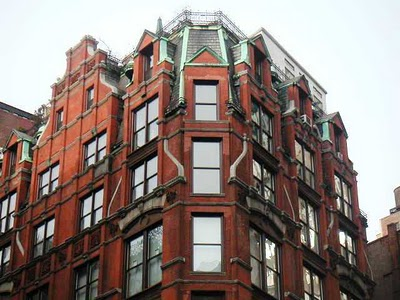 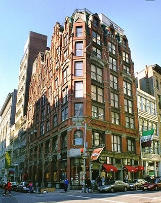
Broadway and 18th, circa 1868
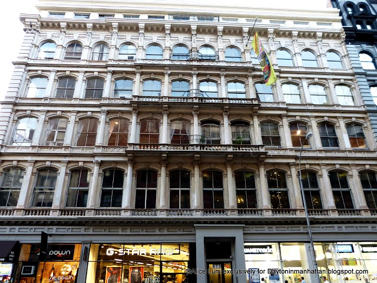 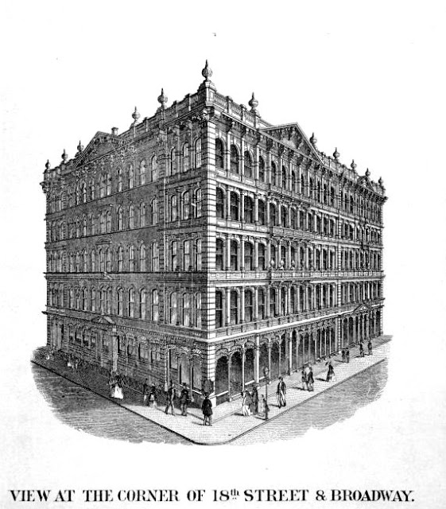
903 Broadway at 20th, circa 1891


935 Broadway at 22nd, circa 1862
civil war period architecture

???
872 Broadway at 18th, circa 1847
smaller

Fifth Avenue at 35th, circa 1914